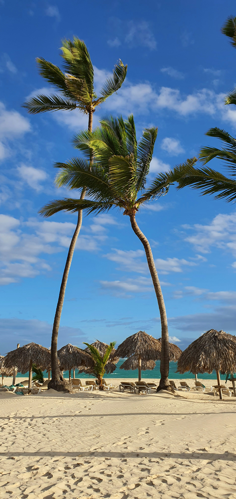

Discover Punta Cana

Punta Cana is a popular tourist destination in the Dominican Republic, known for its beautiful beaches, warm weather, and tropical scenery. Visitors can relax along the coast, explore nearby islands, enjoy boat tours, and experience the natural beauty of the Caribbean.
This guide is designed for people visiting Punta Cana for the first time. Whether you are looking for fun activities or a place to stay, this guide can help you discover some of what Punta Cana has to offer.
Things to Explore
You're free to use the navigation above to explore activities and places to stay during your visit!